a page dedicated to cool sites i've come across while web surfing!
a page dedicated to cool sites i've come across while web surfing!
here's my button and code if you'd like to link back to me ☆⌒(*＾-゜)v and remember to save them to your own site!


 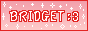
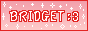


 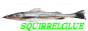
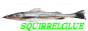


 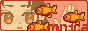
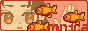


 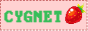
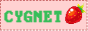


 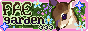
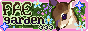


 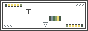
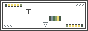


 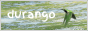
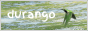


 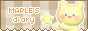
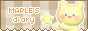


 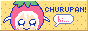
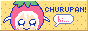


 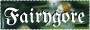
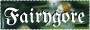


 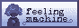
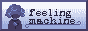


 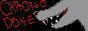
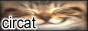
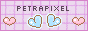
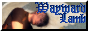
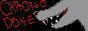
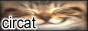
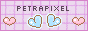
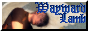
 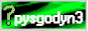
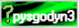
 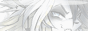
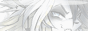
 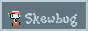
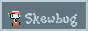

 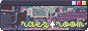
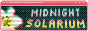
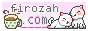
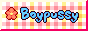
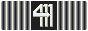
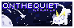
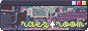
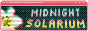
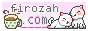
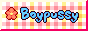
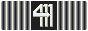
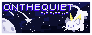
44caliber.net / dogsprite / pelagiczones / bubbly / yaebee / cyclopamine / innkeeper / vianamana

neustadt.fr / pux.nehukon.de / kiyuyu / chia.design / thalita.dev / xobyte / gilest.org


horg.com / how i experience web today
please do let me know if these sites had their URL changed!